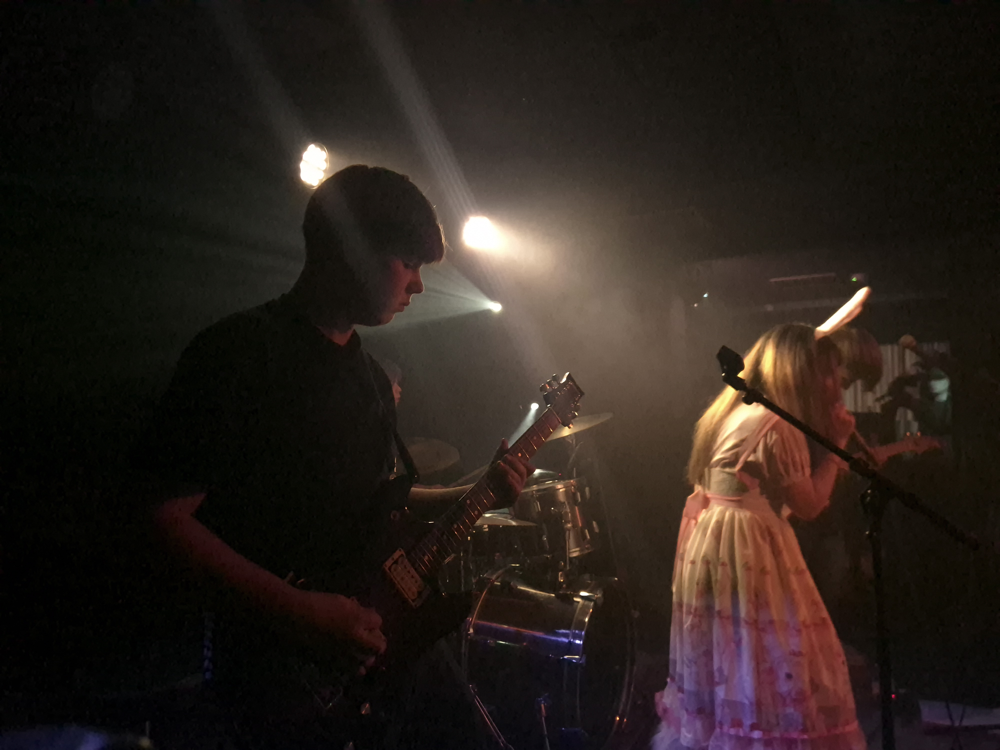
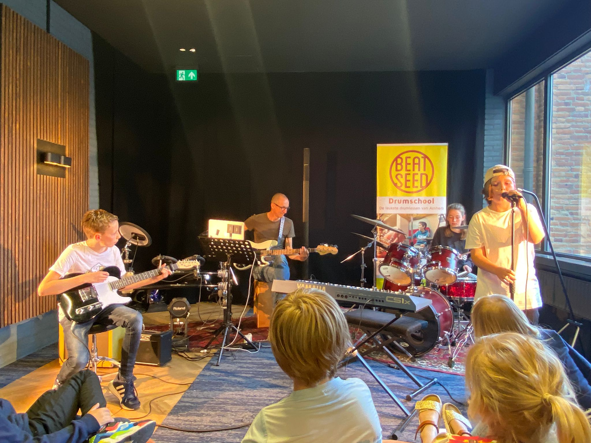
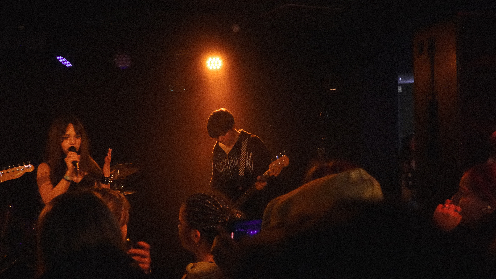
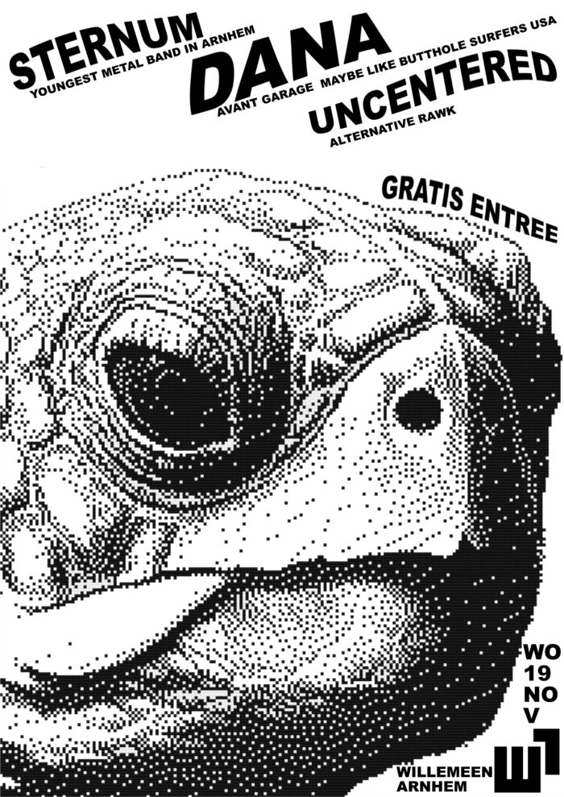
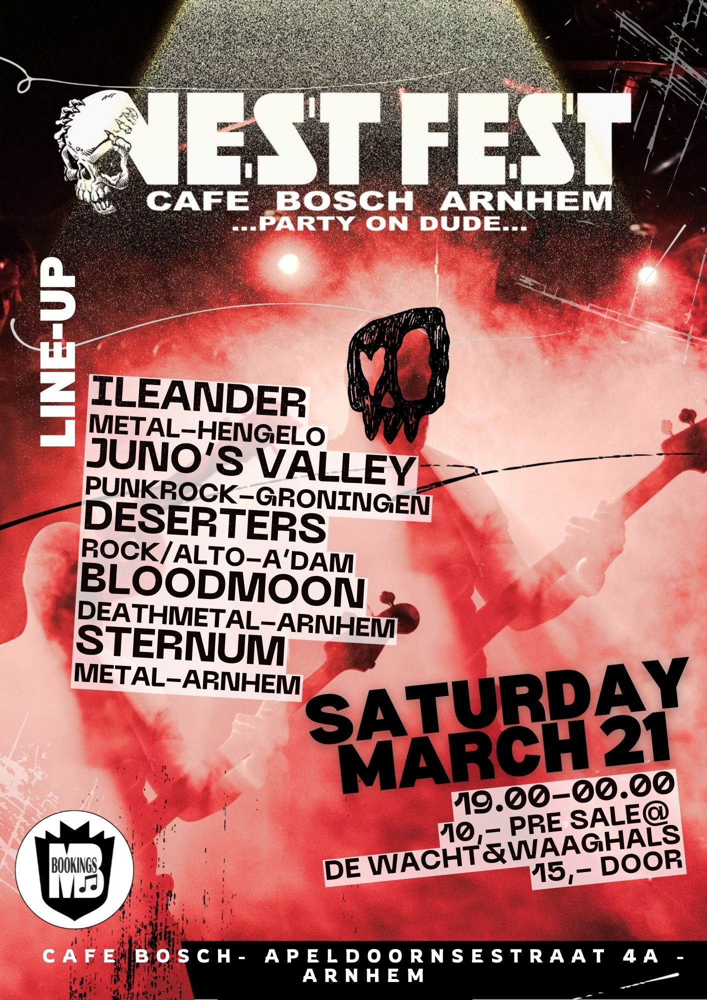
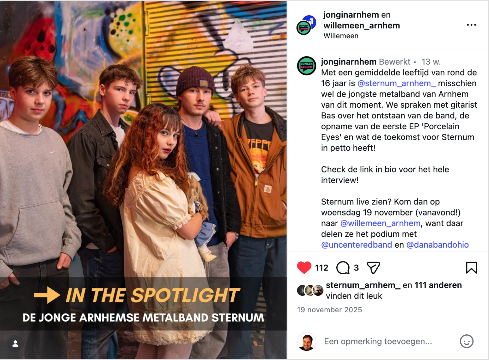

Ervaring
-
Jan 2022 – Aug 2023
Band Milou, Julien & Marc — Gitaar -
Dec 2023 – Okt 2025
Sternum — Bassist -
Okt 2025 – heden
Sternum — Leadgitaar -
Feb 2025 – heden
Gitaarles (Studio 26)
Hoogtepunten
- 3voor12 — “Porcelain Eyes” — Bekijk artikel
- Popspot ontwikkeltraject (coaching + EP-productie)
- EP-opname bij Lil Heaven Studios (Arnhem)
- Muziek op Spotify — Sternum op Spotify
- Recensie Uitnacht.nl — “moddervette ritmesectie met snijdende gitaren. Ondanks hun jonge leeftijd klinkt Sternum volwassen, ambitieus en compromisloos.” Uitnacht.nl
- Recensie Jong In Arnhem — “Met een gemiddelde leeftijd van rond de 16 jaar is Sternum misschien wel de jongste metalband van Arnhem van dit moment.” jonginarnhem.nl
Motivatie
Vanaf mijn geboorte tot mijn derde was ik bijna doof en had daardoor een taalachterstand en ernaast heb ik dyslexie. School was eerst moeilijk voor mij. Er is een ding wat mij makkelijk afgaat: muziek maken. Ik vind het fijn en ik doe het ook veel. Muziek is een manier waarop ik me goed kan uiten, het is een uitlaatklep als ik ideeën heb maar ook als ik het moeilijk heb.
Ik begon met zanglessen dat heb ik anderhalf jaar gedaan. Toen ben ik op mijn 12e gestart in een bandje als zanger. De band werd begeleid door een muziekdocent. Daarmee heb ik ook een aantal keer opgetreden. Ik voelde toch me als zanger kwetsbaar, niet prettig. Tegelijkertijd speelde ik thuis ook veel gitaar.

Een goede vriendin Luna wilde mij als bassist in haar band om op te treden op de muzikale avond van school. Dat was een groot succes en toen ben ik bassist geworden in de band van Luna (Sternum).
Mijn vader zei me op mijn 14e dat ik eventueel ook een opleiding tot muzikant kon volgen en toen ben ik gaan kijken naar wat ik er allemaal mee kon worden. Toen ik dit hoorde raakte ik heel gemotiveerd om school af te maken en me te richten op een opleiding die mij blij maakt. Omdat ik het serieus wilde nemen ben ik lessen gaan volgen bij Studio 26 in Velp. Ik heb les gehad van Danny Maaskamp en in die anderhalf jaar ben ik gegroeid en richt ik me steeds meer op lead gitaar.
Ik speelde nog steeds basgitaar maar dat deed ik omdat dit nodig was niet omdat ik het wilde. Ik heb meer te bieden in gitaar en heb met de band afgesproken om lead gitarist te worden. Er werd een nieuwe bassist gezocht.
Met zijn vijven in de band werden we beter en hebben veel opgetreden. We hebben meegedaan met het popspot ontwikkeltraject en vanuit daar onze eerste single Porcelain Eyes opgenomen. Sindsdien treden we steeds meer op en als we spelen dan staan de zalen in arnhem vol. Dat is heel tof om te doen.
Ik speel elke dag gitaar en wil altijd beter worden. Het is mijn manier om me te uiten als het teveel wordt of als ik energie heb. Het zou fantastisch zijn om wat ik leuk vind later ook te doen. Ik hou ervan om muziek te componeren en samen met anderen muziek te maken.
Ik ben naar de open dag van Deltion geweest en ik voelde me daar meteen thuis en welkom. Studenten stapten gelijk op mij af en gingen vragen stellen. Het kwam op me over dat iedereen goed met elkaar was.
We zijn bij de presentatie geweest en de docent kwam erna bij me staan en was heel geïnteresseerd in mij. Het gaf me een fijn gevoel en vertrouwen. Dit maakte dat ik bij Deltion Auditie doe. Ik wil hier graag de opleiding volgen.
Als ik over mijn toekomst nadenk dan zou graag mezelf in de toekomst als sessiemuzikant willen verhuren. Nadat ik deze opleiding af heb zou ik graag door willen aan de rock academie of conservatorium.
Ik heb veel zin om te beginnen omdat ik bij jullie heel veel mensen ontmoet die ook met muziek bezig zijn. Ik wil zoveel mensen leren kennen in de industrie en mijn connecties vergroten. Ik wil veel leren over wat het beroep muzikant inhoudt en verder willen groeien als lead gitarist. Ik zou het liefst ook een band willen starten met medestudenten en hiervoor nummers schrijven.
- Ik ben rustig op het podium, ik heb geen goede stage-presence. Tijdens optredens is iedereen in beweging maar ik sta stil en kijk naar mijn gitaar.
- Als lead gitarist kan het er uit zien alsof ik afwezig ben maar ik wil leren mijn gevoel te tonen. Ik durf mezelf er niet helemaal in te gooien.
- Ik kan mezelf nog verbeteren in theorie. Ik wil nóg meer akkoorden kunnen en sheetmusic kunnen lezen.
- Ik heb moeite met plannen en als professional moet je je eigen dingen gewoon regelen. Ik ben soms te passief hierin. Ik zie het niet.
Kortom ik ben een rustig en aardig persoon met veel in zijn mars op gitaar en de wil om nog veel beter te worden en een echte muziekprofessional te worden. Ik zou echt blij zijn als jullie me aannemen.

Video’s
Optredens

Sternum + Blackout + Mokrypse

Sternum + Baardvader (VOL = VOL)

Sternum + Dana + Uncentered


In the Spotlight (19 november 2025)